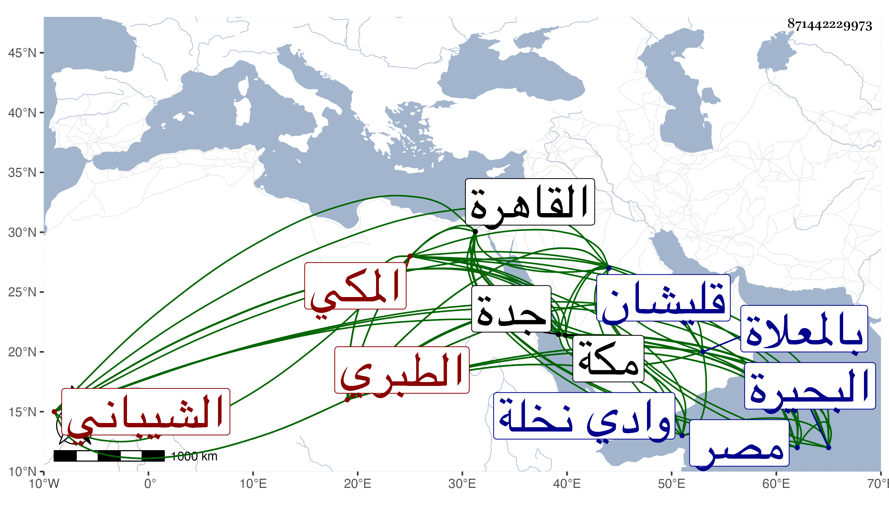

0902Sakhawi.DawLamic.ITO20230111-ara1.EIS1600.871442229973
Biography ID: 871442229973
272
محمد بن يعقوب بن إسماعيل بن محمد بن عبد الرحمن بن عبد الرحيم ابن أبي المعالي يحيى بن عبد الرحمن الجمال أبو عبد الله بن الشرف أبي محمد الشيباني الطبري الأصل المكي المتصل نسبه بصاحب العدة الحسين بن علي الطبري ويعرف بابن زبرق . ولد ظنا في سنة ثلاث وخمسين وسبعمائة وسمع من العز بن جماعة والموفق الحنبلي جزء ابن نجيد ومن التقي الحرازي وآخرين ، وأجاز له خليل المالكي والشهاب الحنفي وطائفة ، وحدث سمع منه الفضلاء ودخل القاهرة غير مرة وولي النظر على قليشان وقف الصلاح يوسف بن أيوب على الشيبانيين بالبحيرة من ديار مصر وولي خطابة وادي نخلة وقتا وكان له به مال . ومات بعد قدومه من جدة بليال في صفر سنة اثنتين وعشرين بمكة ودفن بالمعلاة . ذكره ابن فهد في معجمه تبعا للفاسي ، قال شيخنا في أنبائه وله سبعون سنة رحمه الله .
